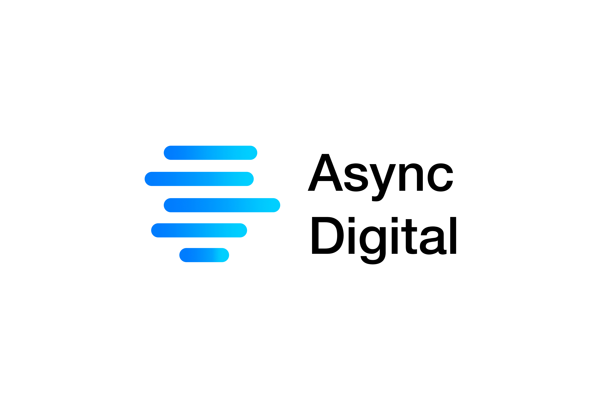

Missed calls, lost patients
- Receptionists are busy with patients in the chair
- Callers hang up and try the next clinic on Google
- You never know how many enquiries you missed

We help dental clinics follow up with every missed caller automatically — so no enquiry falls through the cracks, even when the phone rings off the hook.
When a call goes unanswered, our system picks it up immediately. No hardware to install — it works alongside your existing phone line.
Within seconds, the caller receives a friendly message with a link to book a callback at a time that suits them.
The callback appears on your calendar automatically. Your team calls back, the patient books in, and nothing gets lost.